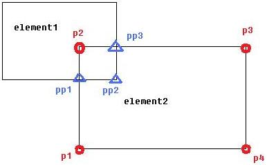

Unmodified Element Geometry
Still on vacation in Andalusia, and still not finished fixing the roof, since it never stops raining. The weather is so bad I have nothing better to do than write a brand new post on how to obtain the original unmodified geometry of an object intersected by another building element:
Question: I have two building elements which intersect, for instance like this:

The two may be walls, slabs, columns, beams or other elements. I am trying to obtain the coordinates of the corner points of the top face of element2, i.e. (p1, p2, p3, p4). Instead, the Tessellate method is returning the vertices (p1, pp1, pp2, pp3, p3, p4) of the modified geometry. What can I do to obtain the vertices of the original, unmodified geometry?
Answer: I see that you have two elements which are mutually intersecting. The geometry being returned to you is the result of subtracting the other element geometry from the one you are interested in. What you are trying to obtain is the original, unmodified geometry.
Probably the most reliable way to solve this problem is to use the doc.Delete approach for temporary element deletion described by Scott Conover on obtaining the gross material quantities of an element.
Some other aspects of mutually intersecting elements in the specific case of family instances are discussed in the post on column and stair geometry.
If the element2 that you are analysing is a wall, and the element1 cutting off part of it is a column, you might also find the FindReferencesByDirection technique useful to determine the columns intersecting the wall, i.e. which columns to temporarily delete.